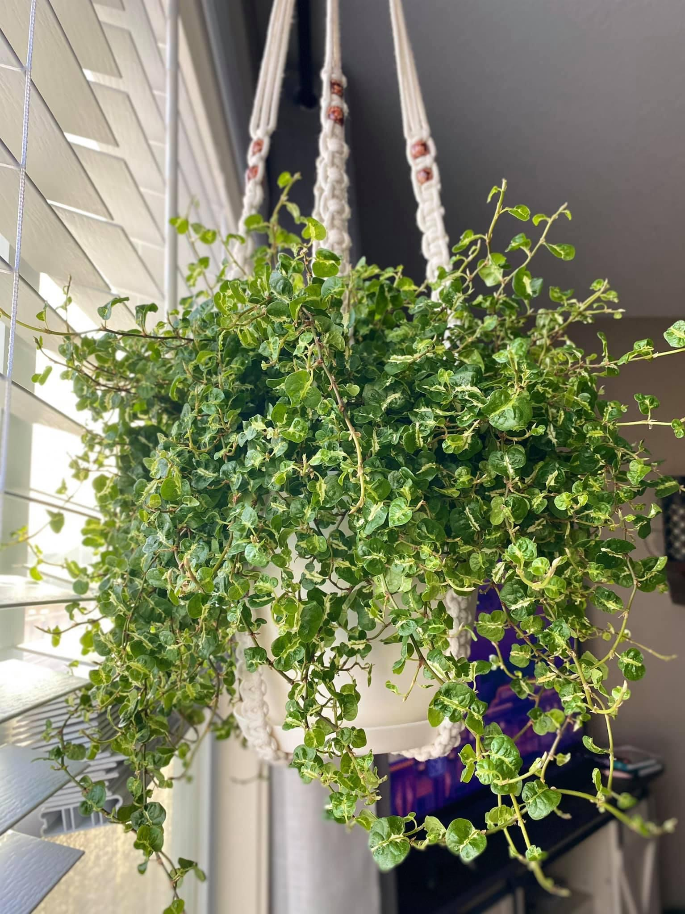

In my spare time, I like to collect and take care of my houseplants. Like many people, I found myself with an abundance of time at home during the pandemic, and I decided to see if I could keep a plant alive. Fortunately for the African Orchid that I started out with, I found out that I can keep plants alive, and my collection has grown to nearly 100 plants in the last year and a half.
Pictured below is my favorite plant, a Creeping Fig(Curly). Her name is Fig Newton.
